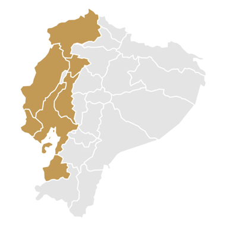
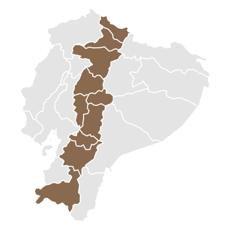
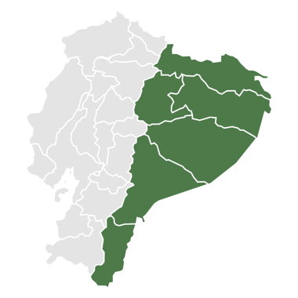

Evaluación de Memoria Semántica mediante Evocación Oral (EMSEO)
Instrumento para evaluar la memoria semántica a través de la evocación oral. El estudiante observa fotografías de las cuatro regiones del Ecuador y responde tres preguntas sobre cada una: qué es, a qué grupo pertenece y qué sabe de ello.



¿Quién escribe las respuestas?
Por calificar (0)
Vas a ver fotos de lugares, animales y cosas del Ecuador. En cada foto vas a responder:
No importa la ortografía. Si no sabes, pasa a la siguiente. No hay respuestas malas.
Gracias por tu esfuerzo y por todo lo que escribiste.
Ahora avísale a tu profesor o profesora.
Solo para el docente
Puntaje obtenido sobre el máximo de cada región
Suma de las 20 láminas, máximo 40 por pregunta
| Región | Evoc. | Categ. | Caract. | Total |
|---|
| Lámina | ¿Qué es esto? | Grupo | Lo que sabe | Evoc. | Categ. | Caract. |
|---|